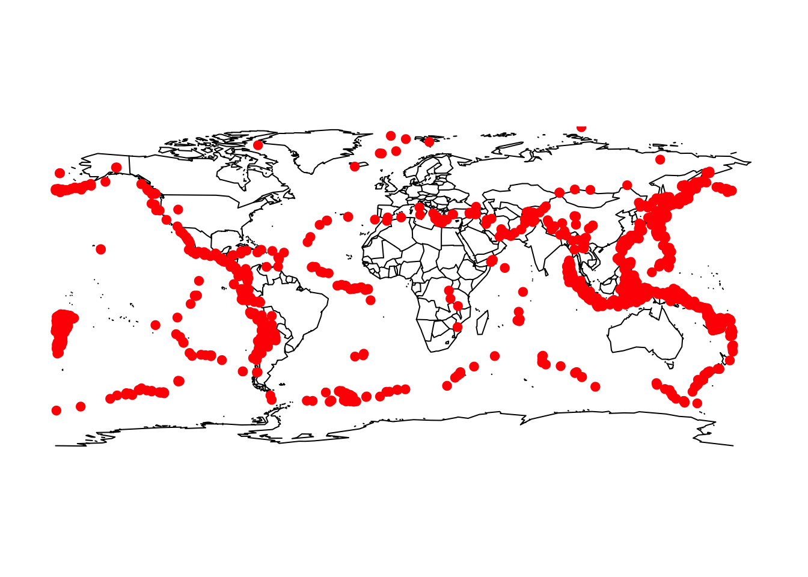

Chapter 12 Earthquake coordinates (cont’d)
You thought we’d forgotten data frames, didn’t you?
coords = do.call(c,coords) # De-list-ify to vector
coord.pairs = strsplit(coords,",") # Break apart latitude and longitude
coord.df = do.call(rbind, coord.pairs) # De-list-ify to array
coord.df = apply(coord.df,2,as.numeric) # Character to numeric
coord.df = as.data.frame(coord.df)
colnames(coord.df) = c("Latitude","Longitude")
head(coord.df)## Latitude Longitude
## 1 -55.214 -129.000
## 2 6.303 125.650
## 3 -17.983 178.744
## 4 -17.600 167.856
## 5 36.088 70.687
## 6 -17.664 168.004## Warning: package 'maps' was built under R version 4.0.2
12.0.1 Replacements
Assigning to regmatches() changes the matched string, just like substr()
sub() and gsub() work like regexpr() and gregexpr(), but with an extra replace argument
sub() produces a new string, assigning to regmatches() modifies the original one
Really, assigning to regmatches() creates a new string, destroys the old one, and assigns the new string the old name.